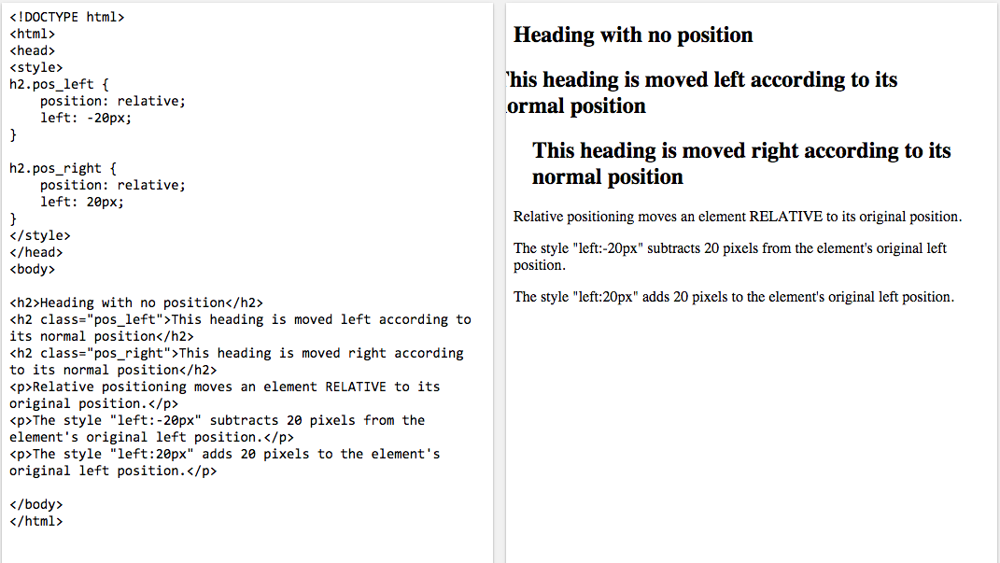
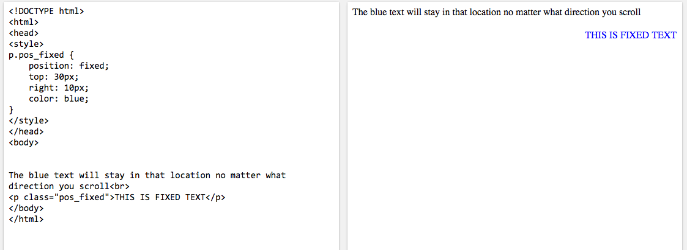
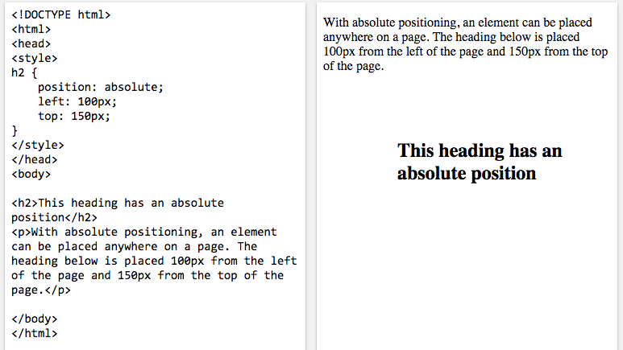
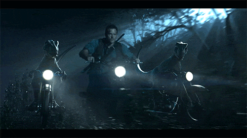

Static
This is the default setting. Essentially, is not positioned in relation to anything else.
Relative
This behaves the same as static unless it is given properties (top, right, bottom, left) which will cause the element to be adjusted relative to it's native position. Other content will not be adjusted to fit any gap left by the element.

Fixed
This will position the element relative to the viewport so that even if the browser page is scrolled the element will remain in the same place.
The blue and green twitter images on the bottom right corner, which link to our twitter handles are examples of 'fixed' items.

Absolute
This behaves like fixed positioning except that it will be relative to the nearest positioned ancestor instead of the viewport.

Float
This allows you to take that element out of normal flow and position it to the far left or right of the containing box. The element becomes a block-level element that other content flows around.
Below are some gifs, try resizing or adjusting the zoom of your browser window and see what happens to the placement of each image.



If you couldn't tell, the images will be pushed down and to the left starting with the elephant and then the dancing old man, as you decrease the browser window size or increase the window zoom.